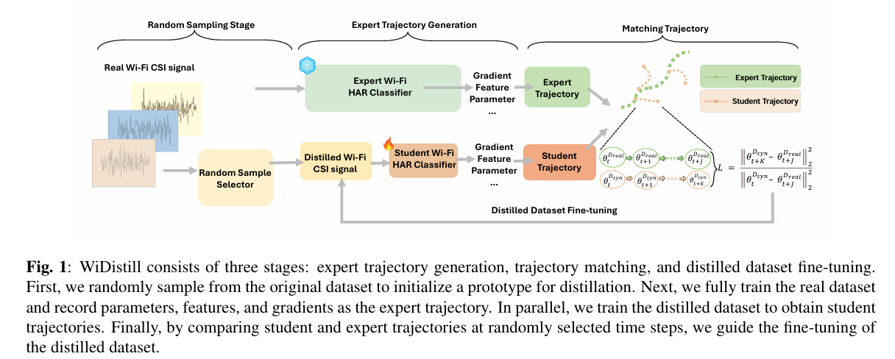
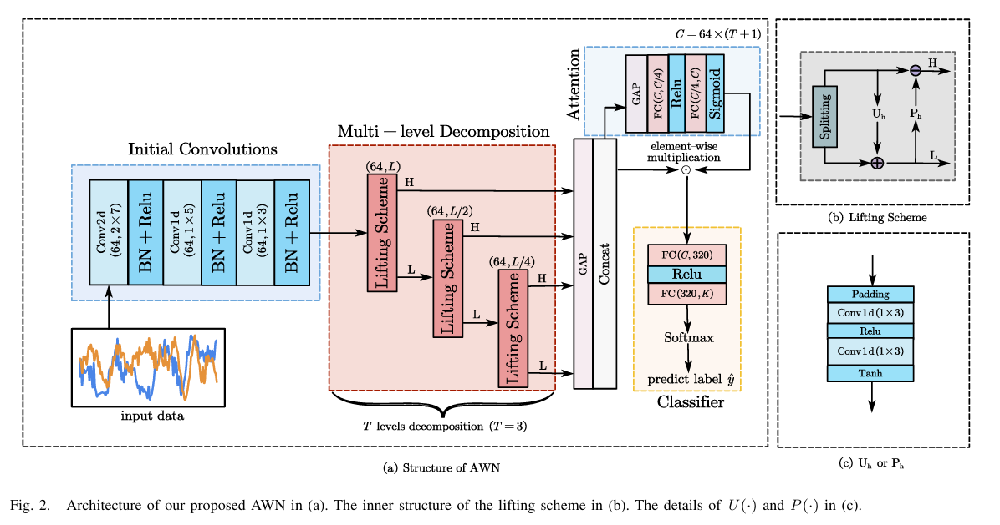
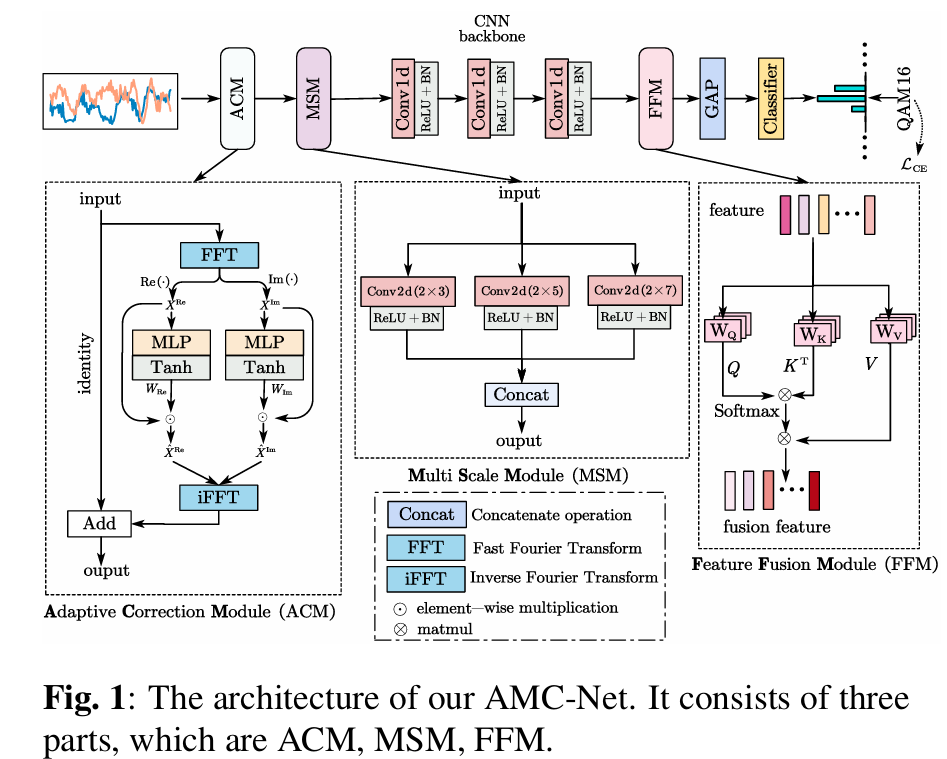
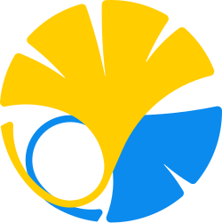
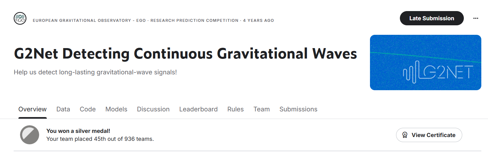
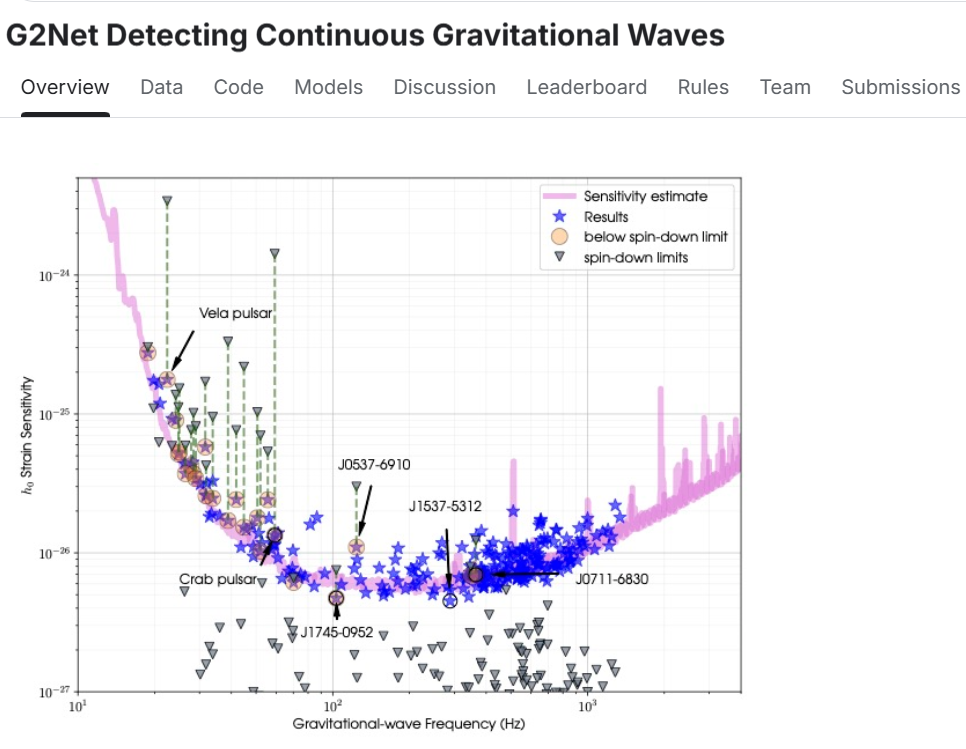

01
Human-Centered Robotics
Human-robot interaction, shared autonomy, and robotic augmentation for adaptive and intuitive collaboration.
Academic Homepage
M.S. Student · The University of Tokyo
I work on human-centered robotics, multimodal sensing, and machine learning, with an interest in building systems that understand people and collaborate with them naturally.

About
I am an M.S. student at the University of Tokyo. My current research explores multimodal sensing and learning for understanding human motion, intention, and physical states, together with human-centered robotics, shared autonomy, and robotic augmentation.
Previously, I worked on multimodal human sensing with Wi-Fi CSI, wearable IMUs, and computer vision, as well as RF signal processing and automatic modulation classification with deep learning.
Research
My work connects perception, learning, and interaction.
Human-robot interaction, shared autonomy, and robotic augmentation for adaptive and intuitive collaboration.
Combining Wi-Fi CSI, wearable IMUs, and vision to recognize activities, identities, pose, and physical states.
Learning efficient and robust representations for wireless and RF signals under real-world channel and noise conditions.
Publications
Publications and preprints listed in my CV.

View full-size figure ↗Dataset distillation and trajectory matching for improving training efficiency and cross-user generalization in large-scale Wi-Fi sensing.

View full-size figure ↗IEEE Transactions on Cognitive Communications and Networking

View full-size figure ↗IEEE International Conference on Acoustics, Speech and Signal Processing
Experience
The University of Tokyo
Multimodal perception, shared autonomy, robotic augmentation, and adaptive human-machine collaboration.
Wi-Fi CSI, wearable IMUs, computer vision, human identification, 3D pose estimation, and dataset distillation.
Key Laboratory of Intelligent Perception and Image Understanding
Deep learning and time-frequency representations for robust automatic modulation classification.
Education

2026.10 — 2028.10 (Expected)
M.S. in Information Science and Technology
Department of Information Physics and Computing
2020.09 — 2024.07
B.Eng. in Artificial Intelligence, Turing Program
Selected among 40 students from 1,450 undergraduates · GPA 3.7/4.0
Competition award
Kaggle · European Gravitational Observatory (EGO) · 2023
Silver Medal · 45th of 936 teams · Top 5%

Detect weak, long-lasting gravitational-wave signals emitted by rapidly spinning neutron stars in noisy data. The competition challenges participants to develop models sensitive enough to identify these continuous signals.
Neutron stars pack a mass comparable to the Sun into a city-sized object. Searching for their continuous gravitational waves could reveal new insights into the structure of these extreme stars and help broaden gravitational-wave astronomy.
View competition ↗
Notes
My previous Hexo posts remain available as a small personal archive.